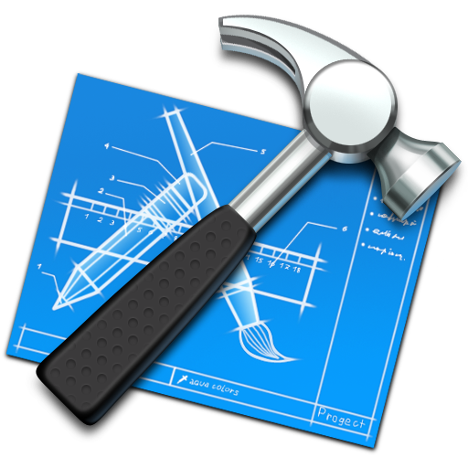

 Menuiserie Vochelet

Un atelier de 600 m2 et un batiment de stockage
Les véhicules de chantier sont aménagés avec de nombreuses machines portatives. Notre atelier comprend plus de 12 machines stationnaires dont:
- 1 Centre d'usinage SCM, 4 axes
- 1 Plaqueuse de chants numérique
- 1 Scie à format numérique
- 1 Tenonneuse 4 axes
- 1 Raboteuse numérique
- 1 Dégauchisseuse numérique
- 1 Corroyeuse numérique
- 1 Scie à ruban
- 1 Calibreuse
- 1 Mortaiseuse
- 1 Compresseur
- 1 système d'aspiration des poussières pour les machines